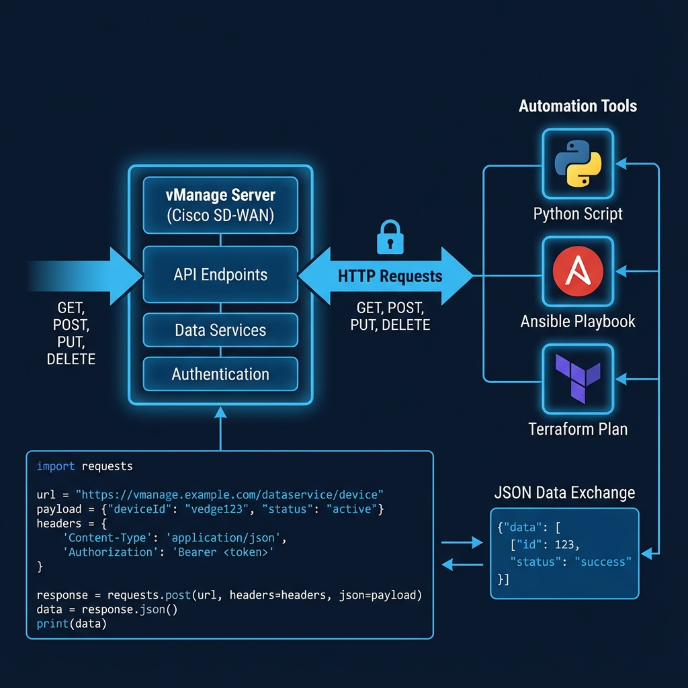

Chapter 13
Cisco Catalyst SD-WAN Programmability
Learning Objectives
- Memahami vManage REST API architecture
- Menggunakan API untuk automation tasks
- Mengimplementasikan Python SDK untuk SD-WAN
- Mengintegrasikan dengan external tools (Ansible, Terraform)

Gambar 13.1 - Arsitektur vManage REST API dengan integrasi automation tools
vManage REST API
vManage menyediakan comprehensive REST API untuk semua management functions.
API Categories:
| Category | Endpoints | Functions |
|---|---|---|
| Device | /dataservice/device/* | Device inventory, status |
| Template | /dataservice/template/* | Device dan feature templates |
| Policy | /dataservice/template/policy/* | Policy configuration |
| Statistics | /dataservice/statistics/* | Monitoring data |
Authentication:
Python - Login
import requests
base_url = "https://vmanage.example.com"
login_url = f"{base_url}/j_security_check"
payload = {
"j_username": "admin",
"j_password": "password"
}
session = requests.session()
response = session.post(login_url, data=payload, verify=False)
# Get XSRF token for subsequent requests
token_url = f"{base_url}/dataservice/client/token"
token = session.get(token_url).textCommon API Operations
Get Device List:
Python
# Get all devices
devices_url = f"{base_url}/dataservice/device"
headers = {"X-XSRF-TOKEN": token}
response = session.get(devices_url, headers=headers)
devices = response.json()["data"]
for device in devices:
print(f"{device['host-name']} - {device['system-ip']}")Push Template to Device:
Python
# Attach template to device
attach_url = f"{base_url}/dataservice/template/device/config/attachfeature"
payload = {
"deviceTemplateList": [{
"templateId": "template-uuid",
"device": [{
"csv-deviceId": "device-uuid",
"csv-deviceIP": "10.0.0.1"
}]
}]
}
response = session.post(attach_url, json=payload, headers=headers)Integration Tools
Ansible
Cisco SD-WAN collection untuk automation
Terraform
Infrastructure as Code untuk SD-WAN
CI/CD
GitOps workflow untuk policy deployment
Webhooks
Event-driven automation triggers
Cisco DevNet
Kunjungi developer.cisco.com untuk documentation, sample code, dan sandbox environments.